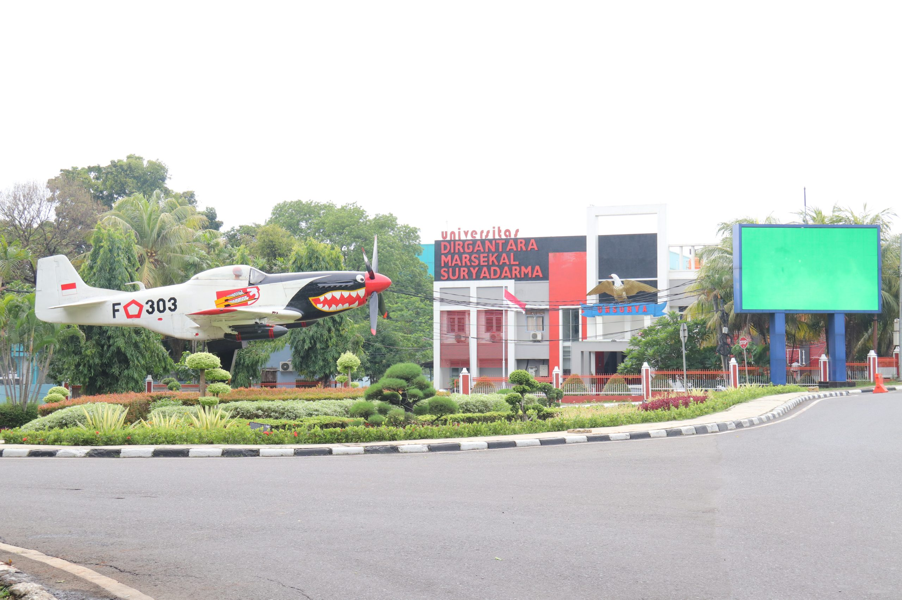

Profil
.png)
Universitas Dirgantara Marsekal Suryadarma
UNSURYA
Sejarah
-
Awal Berdiri sebagai Institut Teknologi Dirgantara (ITD) – 1987–1989
Inisiatif pendirian perguruan tinggi berfokus dirgantara dimulai pada 1970-an oleh TNI AU. Tahun 1987, Institut Teknologi Dirgantara (ITD) didirikan oleh Yayasan Adi Upaya (YASAU) di bawah pembinaan TNI AU, dengan tiga jurusan: Teknik Logistik Penerbangan, Teknik Aeronautika, dan Teknik Elektronika Penerbangan. -
Transformasi menjadi Sekolah Tinggi Teknologi Dirgantara (STTD) – 1989–1998
Pada 19 Mei 1989, Kementerian Pendidikan secara resmi mendaftarkan institusi ini sebagai Sekolah Tinggi Teknologi Dirgantara (STTD). Oktober 1998, STTD mendapat pengakuan akademik penuh dan menjadi perguruan tinggi pertama di Indonesia yang berfokus pada teknologi dirgantara. -
Peningkatan Status Universitas – Universitas Suryadarma (1999)
Berkat perkembangan pesat, Kementerian menyetujui peningkatan status STTD menjadi universitas melalui SK No. 109/D/O/1999 tanggal 24 Juni 1999, dengan nama Universitas Suryadarma. Fakultas umum seperti Teknik Sipil & Perencanaan, Ekonomi, Hukum, serta Ilmu Sosial & Politik turut dibuka. -
Pembaruan Nama untuk Identitas – 2016
Tahun 2016, melalui SK Kemenristekdikti No. 147/KPT/I/2016, nama universitas menjadi Universitas Dirgantara Marsekal Suryadarma, menambahkan “Dirgantara” dan “Marsekal” untuk menegaskan identitas kedirgantaraan dan penghormatan pada nama besar Suryadarma. -
Penambahan Fakultas Ilmu Kesehatan – 2023
Pada 5 Juli 2023, Akademi Keperawatan RSP TNI AU (AKPER RSP TNI AU) bergabung ke universitas, membentuk Fakultas Ilmu Kesehatan (FIKES).